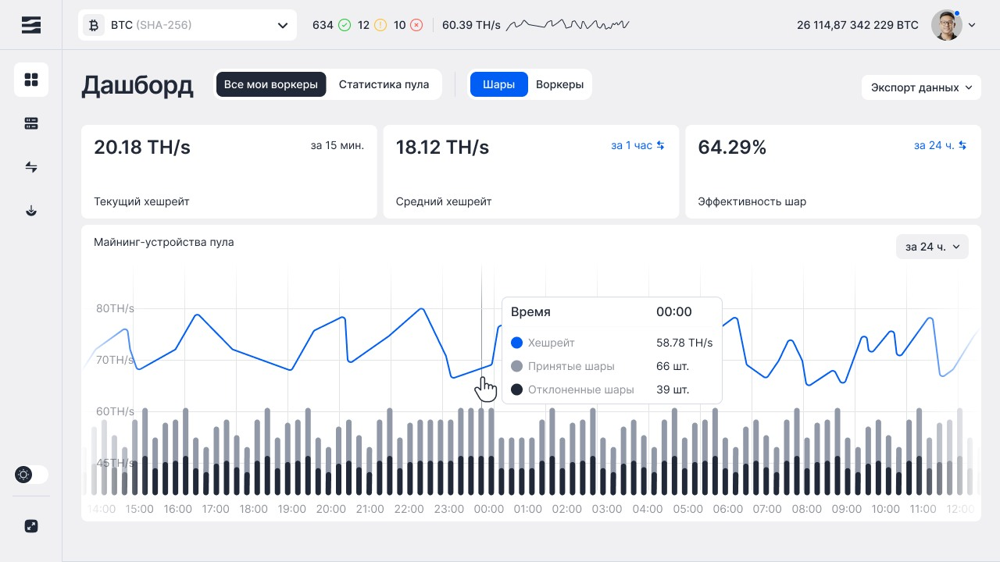
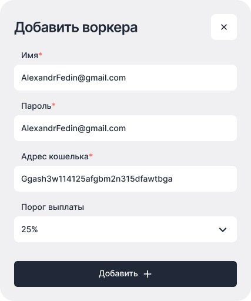

UX/UI & Art DirectionОбо мне ↗
ARCHIVE OF DIGITAL EXPERIENCES
UX/UI & Art DirectionОбо мне ↗
GLOBAL DIGITAL GROUP / INTERFACE STUDYСначала
Сначала
система.
Потом магия.
Интерфейс можно увидеть.
А можно заглянуть внутрь.
01 / СТРУКТУРА

02 / ИНТЕРФЕЙС
03 / КОМПОНЕНТА НЕ НА ПОВЕРХНОСТИ.
UX/UI & Art DirectionОбо мне ↗
DESIGN IS A PLACE TO EXPLOREНе по порядку.